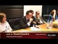
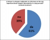
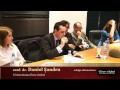
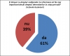

{kind=link}
 Discurs Prof. Daniel Șandru - invitat (A2)
Discurs Prof. Daniel Șandru - invitat (A2)
 Discurs Conf. Dr. Ilie Fârte - invitat (N2)
Întrebări auditoriu

Încheiere

Discurs Conf. Dr. Ilie Fârte - invitat (N2)
Întrebări auditoriu

Încheiere

{kind=link}
{kind=link}
{kind=link}
{kind=link}
{kind=link}
{kind=link}
{kind=link}
Dezbatere publica - Iaşi, Universitatea “Alexandru Ioan Cuza”, 13 aprilie 2011
Echipa afirmatoarea: Cristina Roşu, studentă la Facultatea de Drept si Daniel Şandru, conferenţiar Facultatea de Ştiinţe Politice şi Administrative a Universităţii “Petre Andrei” din Iaşi
Echipa negatoare: Ioana Coman, elevă la Colegiul Naţional “Emil Racoviţă” Iaşi si Ilie Fârte, conferenţiar Facultatea de Filosofie a Universităţii “Alexandru Ioan Cuza” Iaşi
Moderator: Liviu Antonesei, publicist, profesor la Facultatea de Ştiinţele Educaţiei
Cristina Roşu , afirmator 1
Bună seara, mă numesc Cristina Roşu, sunt studentă în anul IV la drept şi alături de coechipierul meu domnul conferenţiar Daniel Şandru am deosebita plăcere să sustinem aceasta tema. Vom arata prin argumentele noastre că este timpul ca dreptul de informare al cetăţeanului să fie mai important decât dreptul demnitarului la viaţă privată. Ei bine, în discursul meu, surprinzător, nu voi susţine faptul că dreptul la viaţă privată este mai important sau mai puţin important decât dreptul la informare al cetăţeanului, ci dimpotrivă susţin că ambele sunt două valori importante care ar trebui să fie respectate într-o societate democratic. Totusi, argumentele noastre se vor referi la acele situaţii în care aceste două valori vin în conflict, şi în cadrul acestor situaţii vom susţine faptul că este justificată restricţionarea dreptului demnitarului la viaţă privată atunci când aceasta se află în conflict direct cu dreptul la informare al cetăţeanului. Ei bine, pentru început ţin să vă prezint câteva definiţii: în primul rând, prin drept la informare înţeleg dreptul pe care îl au cetăţenii de a cunoaşte anumite informaţii, atât in prealabil cât şi după exercitarea dreptului lor la vot. Dreptul la vot, ştim cu toţii, reprezintă o legătură directă între cetăţean şi demnitar, de aceea ne referim la acest proces electoral.
În privinţa dreptului la informare, ţin să evidenţiez două aspecte: în primul rând acesta presupune existenţa unui beneficiu pentru public, pentru că în lipsa unui beneficiu nu putem să discutăm despre un anumit drept care este conferit cuiva, şi în al doilea rând ţin să mă refer la faptul că dreptul la informare este indisolubil legat de existenţa, de respectarea libertăţii de exprimare într-o societate democratica. Tin să identific existenţa unor surse de informare care pot fi foarte largi - spre exemplu începând de la faptul că eu vorbesc în faţa dumneavoastră şi terminând cu faptul că există libertatea presei - există posibilitatea fiecăruia să se exprime prin bloguri, prin dezbateri publice, prin mass-media şi aşa mai departe.
O a doua definiţie pe care vreau să v-o aduc [in discutie] este cea a demnitarilor: din punctul nostru de vedere considerăm că demnitarii sunt reprezentanţii cetăţenilor într-o democraţie în exercitarea puterii publice. Spre exemplu Preşedintele României, Primul Ministru, primarul, prefectul, membrii in Consiliul local şi aşa mai departe. La acest nivel ţin să evidenţiez tot două caracteristici: în primul rând, daca sunt persoane publice, înseamnă că viaţa lor publică nu se termină atunci când se termină programul de lucru de la birou, ci dimpotrivă viaţa publică şi viaţa privată se află într-o devălmăşie, (sic, nota editorului), este greu a se stabili de la bun început o limită între ce este public şi ce este privat, şi în al doilea rând la nivelul acestei definiţii ţin să subliniez faptul că demnitarii au o obligatii conferite de funcţia pe care o deţin şi anume de a avea o conduită morală deosebită faţă de ceilalţi; ei ar trebui să fie un exemplu pentru noi toţi şi de aceea ştacheta se ridică mai sus în cazul lor.
Primul argument pe care vreau să vi-l aduc în discuţie este faptul că există anumite informaţii care ţin de dreptul demnitarului la viaţă privată care ar trebui să fie făcute publice pentru că sunt relevante [pentru public]. Relevanţa acestora rezidă din faptul că în lipsa existenţei unor asemenea informaţii, publicul nu are posibilitatea de a controla în mod direct competenţa pe care o are demnitarul în exercitarea funcţiei; aici să mă refer în primul rând la starea de sănătate pe care un demnitar o poate avea.
Există foarte multe exemple de-a lungul istoriei în care demnitari care aveau probleme de sănătate nu au mai putut să mai candideze sau au fost nevoiţi să renunţe la funcţia pe care o deţin. Spre exemplu, Robert Dole ar fi suferit hemoragii şi operaţii în timpul mandatului său, dacă ar fi ajuns să ocupe funcţia pentru care candida. Se ştia despre faptul că Roosevelt înainte de cel de-al treilea mandat era foarte bolnav şi exista posibilitatea să nu supravieţuiască. Ei bine, în acest context considerăm că este relevant să facem public aceste informaţii, pentru că este dreptul publicului să cunoască exact toate elementele care ar putea să afecteze competenţa demnitarului respectiv în exercitarea mandatului său.
Al doilea argument pe care vreau să vi-l aduc în discuţie este faptul că anumite informaţii care ţin de dreptul demnitarului la viaţă privată ar trebui să fie făcute publice pentru faptul că trebuie să încurajăm o exercitare în cunoştinţă de cauză a dreptului la vot al cetăţeanului. Şi aici mă refer la anumite exemple care ţin de conturarea personalităţii demnitarului. Spre exemplu, felul în care acesta relaţionează cu familia este foarte relevant: este acesta un bun soţ, este un bun tată, este un bun fiu? De asemenea, preocupările din timpul liber al acestuia ar putea să fie foarte relevante: este un împătimit al jocurilor de noroc sau este consumator de droguri, sau este alcoolic şi asa mai departe. Practic, aceste informaţii, susţinem noi, sunt relevante pentru public în vederea exercitării în mod conştient a dreptului la vot. De ce? Pentru existenţa beneficiului public.
Practic, eu ca cetăţean, în momentul în care votez, cred că este dreptul meu să ştiu pe cine votez, să ştiu exact dacă merită, dacă persoana pe care pun ştampila urmează să mă reprezinte într-adevăr, dacă este reprezentativ pentru mine. Şi în acest context cred că este dreptul nostru al tuturor să cunoaştem aceste informaţii pentru a şti dacă persoana respectivă, spre exemplu, îşi înşeală nevasta, oare persoana respectivă urmează să-şi înşele şi electoratul? Cred că este dreptul meu ca cetăţean să îmi răspund atunci când votez. Acest lucru nu se poate fără a cunoaşte informaţia respectivă care da, ţine de dreptul demnitarului la viaţă privată.
Al treilea argument pe care vreau să vi-l aduc în discuţie ţine de faptul că demnitarul consimte expres sau tacit la restricţionarea dreptului său la viaţă privată. Consimţământul expres este clar, avem foarte multe exemple în campanii electorale în care nu de multe ori, de fapt de fiecare dată, ne este prezentată familia demnitarului, ne sunt prezentate hobby-urile lui şi aşa mai departe. Ei bine în acest context, demnitarul practic este de acord ca aceste informaţii care ţin de sfera sa privată să fie făcute publice. Şi în al doilea rând, există un consimţământ tacit, spunem noi, şi acest consimţământ tacit rezultă din faptul că, pe de o parte, demnitarul acceptă cadrul legal care este instituit în prezent în ţara noastră spre exemplu, în ceea ce priveste restricţionarea dreptului la viaţă privată, şi mă refer aici la două legi: pe de o parte legea 96 din 2006 privind statutul deputaţilor şi senatorilor şi de asemenea legea 115 din 1996 privind declaraţia şi controlul averii demnitarului. Practic, ceea ce susţinem noi este că legea instituie practic necesitatea respectării principiului transparenţei, obligativitatea depunerii declaraţiei de avere. Şi de asemenea un demnitar ar trebui să accepte faptul că statutul de persoană publică pe care il deţine presupune şi respectarea libertăţii de exprimare, mai ales a jurnaliştilor, care au posibilitatea de a se exprima în mod liber.
Chestionare incrucisata 1:
Liviu Antonesei: Mulţumesc echipei afirmatoare. Cred că s-a descurcat bine. Dacă mai are de adăugat, mai e şedinţa a doua.
Cristina Roşu: Colegul meu o să continue, oricum.
Liviu Antonesei: E tot timpul. Acum aş vrea ca echipa care contestă, dacă are de adus obiecţii, de pus întrebări echipei care afirmă teza.
Ilie Fârte: Comentarii şi întrebări. Atunci când vorbim de dreptul publicului de a fi informat cu privire la anumite aspecte ale vieţii demnitarului, s-ar înţelege că demnitarul are obligaţia de a dezvălui publicului aceste informaţii. Este aşa? Dreptul la informare a publicului se corelează cu o obligaţie a demnitarului de a pune la dispoziţie aceste informaţii?
Cristina Roşu: Din punctul acesta de vedere, ţin să fac o delimitare. Pe de o parte, obligaţia instituită prin lege de care discutam adineauri, cum că ar trebui să-şi să fie publice anumite informaţii care ţin de averea demnitarului sau care ţin de statutul deputaţilor şi senatorilor. Şi în al doilea rând, ţin să subliniez că în societatea noastră ar trebui să fie respectată libertatea de exprimare şi un jurnalist are posibilitatea să discute practic despre orice doreste el în momentul în care scrie un articol, dar limita este legea şi în contextul acesta nu există o obligaţie.
Ilie Fârte: Răspundeţi prin da sau nu. Dreptul publicului de a fi informat implică obligaţia demnitarului de a dezvălui anumite aspecte ale vieţii sale private? Obligaţii cu privire la informaţiile corespunzătoare. Deci, publicul are dreptul de a fi informat cu privire la avere.
Cristina Roşu: Da.
Ilie Fârte: Asta înseamnă că demnitarul este obligat să dezvăluie date cu privire la avere. Publicul are dreptul de a fi informat cu privire la starea de sănătate a demnitarului. Implică obligaţia demnitarului de a-şi face public buletinul de sănătate?
Daniel Şandru: Răspund eu. La prima întrebare, la prima parte a întrebării dumneavoastră, da. Demnitarul este obligat să anunţe publicul cu privire la averea pe care o are.
Ilie Fârte: Dar în principiu, e o problema de principiu. Drepturile unei părţi implică obligaţii corespunzătoare.
Liviu Antonesei: Dar este o lege care obligă la asta.
Daniel Şandru: Voi da răspuns şi la a doua componentă a întrebării, cu privire la starea de sănătate, dacă această stare de sănătate a demnitarului, să luăm cazul unui preşedinte de stat, poate afecta securitatea naţională, da, demnitarul este obligat să anunţe public acest fapt.
Ilie Fârte: Deci am convenit că drepturile unei părţi implică obligaţiile celeilalte părţi. Şi acuma se pune întrebarea: cum stabilim linia de demarcaţie între aspectele vieţii personale care sunt relevante pentru public şi care implică obligaţia demnitarului de a le dezvălui şi aspectele strict private pe care demnitarul poate să le dezvăluie, dar nu este obligat? Înclin să cred că publicul are dreptul de a fi informat numai cu privire la aspectele personale care au legătură cu funcţia pe care o îndeplineste şi nu. Dacă nu se poate stabili o relaţie de cauzalitate între anumite aspecte ale vieţii personale şi exercitarea funcţiei publice, nu cred că publicul are dreptul de a fi informat iar demnitarul obligaţia.
Liviu Antonesei: Ok, am înteles. La punctul acesta de vedere vei răspunde în faza finală, cele trei minute s-au cam dus şi trebuie să dăm cuvântul şi echipei care neagă teza.
Ioana Coman, Negator 1
Bună ziua, mă numesc Coman Ioana si astăzi voi susţine faptul că nu este timpul ca dreptul la informare al cetăţenilor să fie mai important decât dreptul demnitarului la viaţă privată. Echipa afirmatoare a venit cu un caz alcătuit din trei argumente şi definiţii, suntem de acord cu definiţiile date de echipa afirmatoare a demnitarilor, a dreptului la informaţie.
Primul argument a fost faptul că există anumite informaţii care ţin de viaţa privată şi care contează pentru public. Al doilea argument: faptul că anumite informaţii ar trebui să fie făcute publice pentru cetăţeni astfel încât să influenţeze pentru vot. Dar cât de relevante sunt aceste informaţii pentru vot şi cum putem stabili exact care aspecte ale vieţii private sunt relevante pentru public şi care sunt strict private? Şi cât de mult influenţează unele aspecte ale vieţii private votul cetăţenilor, de exemplu, detalii despre familie, cât de mult poate influenţa cetăţenii la vot câteva detalii despre familia sa?
Mai întâi, v-aş ruga să vă gândiţi că sunteţi acum niste demnitari, aveţi viaţa voastră privată dar şi viaţa publică. În viaţa publică vă prezentaţi aşa cum vă prezentaţi şi în viaţa privată sunteţi urmăriţi de jurnalişti şi să zicem că apar unele conflicte care se publică în ziare şi dumneavoastră vă concentraţi mai mult pe acele conflicte pentru aplanarea lor şi neglijaţi funcţia din cauza acestor informaţii care sunt divulgate. Ilie Fârte: Deci nu mai interesează ce face el ca primar, ci faptul că nu se spală pe dinţi dimineaţa şi-i miroase gura, ceva de genul ăsta, da?
Ioana: Da. Încălcării dreptului la viaţă privată. Ilie Fârte: Şi ziariştii comentează uite ce halenă oribilă are primarul X, în loc să vadă care sunt dispoziţiile pe care le-a adoptat şi ce efecte au asupra vieţii cetăţenilor. Trecem mai departe.
Ioana: Mulţumesc. Al treilea argument legat de demnitar, faptul că acesta îşi dă consimţământul şi îşi prezintă detalii ale vieţii private în campanii electorale. Cu acest lucru suntem de acord pentru că în campaniile electorale şi în discursurile publice demnitarii aleg câte informaţii din viaţa privată să fie publice şi aceasta nu este o încălcare la dreptul la viaţă privată a demnitarului. Cazul afirmator se bazează pe faptul că încălcarea dreptului la viaţă privată a demnitarului afectează şi familia acestuia. Gândiţi-vă ce impact ar avea dezvăluirea unor informaţii despre acel demnitar în public asupra membrilor familiei acestuia şi mai ales asupra copiilor. Atâta timp cât un articol publicat are informaţii false sau adevărate, acesta influenţează foarte mult opinia publică, şi chiar dacă se face un proces şi demnitarul contestă această informaţie, reputaţia sa rămâne pătată şi familia este şi ea afectată şi acestuia i s-a încălcat şi dreptul la viaţă privată.
Alt argument al echipei negatoare este faptul că invadarea dreptului la viaţă privată poate produce conflicte, astfel demnitarul concentrându-se pe acestea şi neglijând funcţia sa, asa cum am spus mai înainte. Am şi câteva exemple, de exemplu este cazul senatorului american Lindsey Graham, şantajat cu informarea presei asupra realei sale orientări sexuale. Acesta era homosexual şi nu a vrut ca publicul să afle despre aceasta, a vrut să fie discret. Ilie Fârte: Mai exact, a păstrat discreţie asupra acestui aspect al vieţii personale pe care l-a considerat irelevant.
Ioana: Asta deoarece opinia publică este foarte uşor influenţabilă. Alt exemplu este faptul că preşedintele american Obama a ales să păstreze discreţia şi să nu afirme că al doilea nume al său este Hussein înainte de alegeri , ar fi fost şantajat de către ziarişti. De asemenea, pentru ca un demnitar să câştige încrederea unui grup mare de persoane, acesta nu trebuie să se deschidă în sensul prezentării vieţii sale private relaţiile pe care le are, familia sa, dacă îi plac jocurile de noroc sau alte lucruri, ci prin ideile sale, prin modul în care se prezintă, în modul în care îşi îndeplineste sarcinile, prin profesionalismul prin care dă dovadă şi de asemenea, prin bunul mers al ţării. Un demnitar are un rol foarte mare în conducerea ţării şi implicit în bunul mers al societăţii, deci al populaţiei. Daca acesta nu-şi va mai putea îndeplini funcţia în sensul în care acesta se concentrează în alte părţi şi doreste să-şi apere dreptul la viaţă privată, astfel ne influenţează şi pe noi. Deci considerăm că nu este timpul ca dreptul la informare al cetăţeanului să fie mai important decat dreptul demnitarului la viaţă privată. Mulţumesc.
Chestionarea încrucişată 2
Liviu Antonesei: Mulţumesc foarte mult. Ce bine v-aţi încadrat în timp. Şi mi-a plăcut şi cooperarea între cei doi membri ai echipei. Deci în momentul de faţă avem prima expunere a fiecăruia din punctele de vedere, echipa negatoare punând deja şi întrebări pentru prima intervenţie echipei afirmatoare. Acuma o să rog echipa care a afirmat să facă acelaşi lucru cu echipa care a negat, inclusiv dacă doreşte să răspundă la întrebarea care a rămas fără răspuns la prima şedinţă de dezbatere.
Cristina Roşu: Da, Ioana, în primul rând aş vrea să discutăm despre libertatea de exprimare. Crezi că ar trebui să existe o anumită restricţionare vis-à-vis de exprimarea unui jurnalist într-un articol pe bază de relevanţă a informaţiilor respective?
Ioana Coman: Consider că înainte de publicarea unui articol, informaţia trebuie să fie verificată din mai multe surse, trebuie să fie adevărată şi consider că anumite lucruri nu ar trebui publicate atât timp cât influenţează drept unei persoane la viaţă privată.
Cristina Roşu: Cum adică îl influenţează?
Ioana Coman: În sensul de “încalcă”.
Cristina Roşu: Şi nu ar însemna asta o restricţionare a libertăţii de exprimare a jurnalistului respectiv?
Ilie Fârte: Răspund eu. Este într-adevăr problematic să credem că putem cu mijloace legale să restricţionăm dreptul ziariştilor de a informa publicul cu privire la viaţa unui demnitar. Spre exemplu, dumneavoastră îmi puteţi face fotografii în timp ce vorbesc. Sunt o persoană publică într-un spaţiu public, am o performanţă publică. Tot ceea ce se întâmplă aici priveşte dreptul publicului de a fi informat, însă dacă dumneavoastră selectaţi un cadru în care eu apar cu ochii închişi pentru că, nu-i aşa, clipesc, şi cu gura deschisă pentru că, nu-i aşa, nu pot vorbi cu gura inchisa şi publicaţi în presa a doua zi fotografia lui Ilie Fârte, o fotografie horror, asa cum se practică, pot eu să dau în judecată jurnalistul că a selectat un cadru irelevant din performanta publică a lui Ilie Fârte? Nu.
Daniel Şandru: Ba de ce nu?
Liviu Antonesei: Chiar se poate.
Ilie Fârte: Este, da, dar este ineficace întrucât prejudiciul este deja creat. Cu alte cuvinte, chiar dacă obţin în instanţă o hotărâre împotriva jurnalistului, imaginea horror a lui Ilie Fârte circulă şi până la urmă se stochează.
Daniel Şandru: Acuma presupunând că aţi avea o demnitate publică. Deci trebuie să contextualizăm această chestie. Aţi spus persoană publică în general.
Ilie Fârte: Bun. Am văzut în decembrie 2004 o fotografie horror a lui Ioan Solcanu în “Lumea Ieşeanului” care - ziariştii de la “Lumea Ieşeanului” n-au probat mult profesionalism atunci - pe prima pagină Ioan Solcanu la o pomană a mâncat dintr-o tăviţă de plastic colivă, ei şi i-a căzut o bucată de colivă din gură. Stop cadrul, cu ochii închişi, cu coliva curgându-i din gură. În fiecare număr, pe prima pagină fotografia lui Ioan Solcanu în această postură. Nu mi s-a părut în regulă. Nu răspundea dreptului publicului de a fi informat.
Liviu Antonesei: Am epuizat şi cele trei minute ale echipei afirmatoare. Acum fiecare şi-a auzit câte un discurs întreg, au avut loc şi schimburi de replici în cele două mici şedinţe de întrebări-răspunsuri. Acum are dreptul echipa afirmatoare la ultimul cuvânt, ca să spun aşa. Sau na, la ultimul cuvânt de aicea, poate vom mai avea cuvinte de-acum încolo. Deci, ultimul cuvânt, domnule Şandru.
Daniel Şandru, Afirmator 2:
Vreau să vă aduc în atenţie trei paliere ale discuţiei. În primul rând, ceea ce numesc argumentul libertăţii rezonabile. Libertatea rezonabilă, care include libertatea de exprimare, dar presupune şi respectarea dreptului la viaţă privată, chiar a demnitarilor, implică totuşi că în orice societate democratică trebuie să existe un mecanism care se numeste “checks and balances”, controale şi contraponderi. Noi nu putem controla în mod exclusiv demnitarii care candidează pentru funcţii publice doar atunci cand se întâmplă ciclul electoral. Ei trebuie controlaţi pe tot parcursul ulterior câştigării mandatului şi singura posibilitate de control, de a asigura acest echilibru, aceste controale şi contraponderi, este inclusiv prin posibilitatea noastră ca public de a fi informaţi de către mijloacele media. De ce se întâmplă acest lucru? Pentru că într-o societate democratică, politicienii trebuie să îndeplinească un criteriu fundamental: ceea ce britanicii numesc accountability. Responsabilitate în faţa cetăţenilor.
Şi atunci revin la o întrebare pusă aici de echipa afirmatoare: în ce măsură este relevant pentru procesul electoral spre exemplu că senatorul american X este homosexual? Eu cred că trebuie să contextualizăm. Poate nu este relevant în spaţiul olandez, poate este şi cred că este relevant în spaţiul românesc. Sunt culturi politice diferite, sunt poziţionări ideologice diferite, sunt valori religioase diferite.
Acum, trec la al doilea argument. Argumentul exagerării, care are un fundament juridic şi care pleacă de la o sinteză dintre articolul 8 din Convenţia Europeană a Drepturilor Omului care prevede dreptul la respectarea vieţii private şi de familie, inclusiv a demnitarului aşadar, şi articolul 10 care se referă la libertatea de exprimare. Sinteza este dată de Curtea Europeană a Drepturilor Omului în nenumărate cazuri în care jurnaliştii au fost acuzaţi şi au fost condamnaţi, inclusiv în ţările membre ale Uniunii Europene pentru intromisiune în spaţiul privat al demnitarului. Ca urmare a analizei unor astfel de cazuri, Curtea Europeană a Drepturilor Omului a arătat că: “în condiţiile în care este important dreptul cetăţenilor de a fi informaţi, într-o societate democratică jurnaliştii au dreptul să exagereze”. Echipa afirmatoare a adus aici în discuţie contextul în care un articol fals ar putea provoca daune morale, de imagine şi aşa mai departe unui demnitar. Trebuie să vă spun însă că jurnaliştii fac, în societăţile civilizate, evident, distincţia între articole de informare, care trebuie probate cu documente, şi articole de opinie, care nu pot fi niciodată probate pentru că opinia, aşa cum ştim din logică, nu se supune valorilor etice , nu poate fi adevărată sau falsă, este pur şi simplu o opinie.
Şi acuma merg mai departe la un exemplu, la un exemplu concret petrecut în societatea românească, un demnitar public care deţine o poziţie de conducere, vă spun şi unde, la Oficiul pentru Protecţia Consumatorului, dar care în familie are o firmă de produs pâine. Toate controalele îndreptate de el ca demnitar în funcţie sunt îndreptate împotriva firmelor concurente de pe piaţă. Este dreptul publicului să fie informat cu privire la ceea ce face el în familie, cu privire la faptul că el produce colaci în familie, şi pe de altă parte din postura de demnitar public atacă firmele concurente? Asta este argumentul final pe care îl aduc în discuţie în această seară. Vă mulţumesc.
Liviu Antonesei: Mulţumesc şi eu foarte mult, cred că n-ai epuizat şapte minute alocate. Acuma dau cuvântul echipei care neagă teza pentru a-şi susţine ultimul cuvânt.
Ilie Fârte, Negator 2
Probabil o sa ne dublăm, o să vin eu cu câteva idei şi o s-o las şi pe colegă să adauge câte ceva. Eu întotdeauna corelez drepturile cu obligaţiile. Dar, revin la ideea fundamentală: dacă publicul consideră că are dreptul legitim de a fi informat cu privire la anumite aspecte ale vieţii demnitarului, automat demnitarul este obligat să dezvăluie aceste aspecte personale. Demnitarul are dreptul de a fi discret cu privire la anumite aspecte ale vieţii personale. Asta nu înseamnă că el vrea să ascundă, ci doar că este discret cu privire la aceste aspecte personale, mai ales dacă ele nu sunt corelate direct cu exercitarea funcţiei publice.
S-a vorbit despre starea de sănătate a unor demnitari. S-a vorbit despre viaţa de moralitate a vieţii private a unor demnitari. Ce pot să constat, citind istorie. Că foarte mulţi, că foarte multe personalităţi cu rol benefic în istorie au avut scăderi în viaţa particulară. Alecu Constantinescu zis Porcul, un mare demnitar liberal din perioada interbelică - bănuiţi de ce i se spunea Porcul - a avut un rol decisiv în evacuarea Moldovei de către trupele ruseşti bolşevizate. Incoruptibilul Robespierre a făcut mai mult rău Franţei decat putredul director Barras. Charles Fox, din păcate premier pentru scurt timp al Angliei după războaiele napoleoniene, a fost excepţional ca demnitar. Cu alte cuvinte, este foarte greu să stabilim o relaţie de cauzalitate între anumite aspecte ale vieţii personale a demnitarului şi exercitarea unei funcţii publice. Foarte probabil, dacă Winston Churchill n-ar fi băut atât de mult şi n-ar fi avut acele probleme ciclotimice, poate Anglia ar fi cedat şi ar fi încheiat pacea. Poate tocmai aceste scăderi în viaţa privată au contribuit la învingerea Germaniei hitleriste. Deci ideea fundamentală este că trebuie păstrată discreţia cu privire la anumite aspecte irelevante pentru exercitarea funcţiei publice.
Întrebarea este dacă am dreptul să impun prin lege ziariştilor anumite graniţe. Sunt, cred eu, inoperabile, de aceea nu cred că prin instrumente legale pot fi impiedicaţi ziariştii să culeagă informaţii private irelevante, cum ar fi de exemplu o eczemă pe care un demnitar o are pe coapsă. Ok, ştiu şi eu, vrei să fii discret cu privire la acest aspect, însă din nu ştiu ce motive ziaristul află despre această informaţie şi o publică. Şi acum eu ce să fac? Să dau în judecată ziarul? Nu se poate face asta. Deci nu prin mijloace legale putem asigura acest drept. Însă demnitarul are, trebuie să aibă posibilitatea să se protejeze. Deci, dreptul la discreţie şi dreptul la protecţie. Depinde de demnitar, nu? Cât de ingenios este în a păstra discreţie cu privire la anumite aspecte personale, contestabile poate, discutabile poate, dar fără relevanţă în exercitarea funcţiei publice.
Liviu Antonesei: Multumesc foarte mult şi echipei negatoare. Am avut parte de o dezbatere chiar foarte interesantă. Ei, sunt un pic înfierbântat de partenerii de discuţie de aici, încât am eu câteva probleme. Deci, în cazul unui demnitar, pe mine mă interesează în primul rând eficienţa. Şi din punctul ăsta de vedere, singurele elemente de viaţă privată care au importanţa pentru mine sunt cele care îi pot impiedica eficienţa sau care încalcă vizibil legea. Depinde, când un presedinte se duce la băut după care urcă la volan, acolo e încălcarea legii. În alte ţări nu s-ar mai discuta, i s-ar lua carnetul. Poate şi carnetul de conducere în sens mai mare, decât în sens mai mic. Churchill sub alcool n-a luat decizii proaste. Alţii iau decizii proaste, nu avem ce face, asta e situaţia, deci nu e o regulă.
Apoi, în ceea ce priveste moralitatea legată de viaţa intimă. Domnule, când a fost scandalul Clinton, s-a făcut o listă. Toţi presedinţii Americii au avut o problemă cu sexul. Că erau afemeiaţi, că erau homosexuali, toţi au avut o problemă. Nu este unul, până la Clinton, care nu a avut o problemă cu sexul. Se pare că Bush junior nu a avut o problemă cu sexul, dar Clinton a lăsat o Americă într-o formă economică cum nu mai fusese de mult, Bush care e un puritan sudic adevărat republican a lăsat o Americă într-o criză poate mai mare decât cea din ’29-’33 când era cât pe ce să fie blocat bugetul Americii.
Ilie Fârte: Domnule profesor, vă rog, nu insinuaţi o falsă relaţie de cauzalitate. Adică să-i internăm acuma pe demnitarii nostri în adulter ca sa...
Liviu Antonesei: Nu, nu, dau exemple, că nu e o regulă.
Ilie Fârte: Dar nici o regulă pe dos.
Liviu Antonesei: Deci problema care se pune în ceea ce priveste, cum să zic eu, moralitatea personală şi nu ştiu ce, dacă nu afectează funcţionarea instituţiei, nu mă interesează. Dar trebuie să fii jurnalist inteligent ca să înţelegi asta. Că nu tot ceea ce afli este interesant. Trebuie să fii extrem de inteligent, dar la noi nu sunt. Drept dovadă, în Franta s-a ştiut tot timpul că Mitterand avea un copil din flori, dar nu s-a făcut caz de asta. Deşi ştia toată presa, a scris cineva despre asta cât Mitterand a fost preşedinte? Nu. Păi ei sunt tâmpiţi să-şi facă preşedintele, să-i strice imaginea preşedintelui lor si al Franţei? Nu. Păi ia să aflăm noi că nu ştiu câţi copii din flori are cineva, păi ar fi o competiţie între tabloide, între tabloide şi ziare serioase, între televiziunile unor moguli, televiziunile celorlalţi moguli. Unii ar demonstra că are cinci, alţii ar demonstra că nu e-n stare, că nici ai lui nu sunt făcuţi, ce Dumnezeu? Deci mai e şi o chestie de profesionalism. Deci ceea ce ţine de raportul dintre dreptul la informare al cetăţeanului şi dreptul demnitarului la viaţă privată, nu e o chestiune numai a demnitarului şi nu-i o chestiune numai a publicului, e o chestiune şi a agentului de informare. Daca ăla e tălâmb, afli o mulţime de lucruri care nu te interesează. De pildă, că unde se duce Irina, că se duce la Iri, că-i la Moni, ce importantă are asta pentru o societate traumatizată de criză cu oameni care mor în faţa spitalelor, eu nu ştiu.
Doar asta vedem la televizor, nu, şi mai e celebru celălalt divorţ, unde întâi s-a împăcat Pepe cu soacra, dupa aia însăşi fiica cu mama ei. Domnule, dar e incredibil. Astea-s lucruri care le vedem în fiecare zi, păi ce, unde e profesionalismul? Nu are nici o treabă, asa că poţi să le dai la băieţii ăştia toate informaţiile secrete din lume, tot nu o să scoată nimic. Tot o să reuşească s-o bulibăşească de să nu mai iasă nimic. Şi eu cu asta m-am oprit, că nu vreau să monopolizez, dar m-au incitat partenerii aici, din stânga şi din dreapta. Acuma puncte de vedere, întrebări celor două echipaje. Poftiţi.
Intervenţie 1: Vă spun bună seara, mă numesc Vlad Ghica. Înainte de a adresa întrebările, deci, sunt pentru partea negatoare, adresez pentru partea afirmatoare. Aş vrea mai întâi să...
Ilie Fârte: Sunt pentru noi şi le adresaţi lor?
Vlad Ghica: Da, da, da. [râsete]
Liviu Antonesei: Aşa.
Vlad Ghica: Aş vrea mai întâi să încadrez un pic întrebările. Este în interesul nostru al tuturor, că afirmăm sau negăm, să activăm şi să ne dorim binele tuturor, al cetăţenilor, corect? Al doilea este că orice demnitar, în principiu, ar trebui să arate mai întâi o performanţă în cariera sa profesională pentru a putea perfoma în demnitatea publică. Şi-atunci, nu consideraţi că o expunere excesivă a vieţii private a demnitarilor poate să alunge bunii profesionişti in a-şi alege o astfel de demnitate? Nu consideraţi că nivelul profesional al demnitarilor a scăzut o dată cu “Moni şi Iri”?
A doua temă pe care aş vrea s-o expun ar fi legată de, ştiu eu, anumite considerente psihologice. Toţi psihologii recomandă o căldură a căminului pentru, ştiu eu, pentru liniştirea, pentru relaxarea reacţiilor demnitarilor mai ales. Nu consideraţi că atacând căminul prin atacarea vieţii private, ştiu eu, îl tensionăm şi aducem atingere capacităţii de a performa în demnitate?
Daniel Şandru: Ok. Răspund acum?
Liviu Antonesei: La ambele întrebări, da?
Daniel Şandru: Prima întrebare. Vorbim aici de demnitari aflaţi deja în funcţie. Asta e primul aspect. Al doilea aspect, acceptând întrebarea dumneavoastră. Mecanismele de selecţie se află la nivelul organizaţiilor politice care selectează aceşti demnitari, şi abia ulterior la nivelul cetăţenilor.
A treia chestiune. Atunci când fac pasul spre o carieră publică, demnitarii îşi asumă inclusiv faptul că se află în vitrină. Dincolo de performanţa lor profesională, ei trebuie să accepte că la un moment dat, dacă nu vor fi discreţi, şi imediat revin aici, ajung la a doua întrebare a dumneavoastră, dacă nu vor fi discreţi cu privire la anumite aspecte din viaţa lor privată care ar putea aduce prejudicii lor sau celor care ar dori sau chiar i-au votat, atunci e mai bine să nu facă acest pas. Şi-acum ajung la a doua întrebare. Şi-o leg de ce spunea aici domnul profesor Fârte. Că demnitarul are dreptul de a fi discret. Nu. Demnitarul are obligaţia de a fi discret. Curtea Europeană a Drepturilor Omului, plecând de la principiul 13 de la Johannesburg, pe care vi-l citesc: “în toate legile şi deciziile privitoare la dreptul de a obţine informaţii, interesul public privitor la cunoaşterea informaţiei va fi luat în considerare în primul rând”. Deci nu viaţa privată. Ci interesul public. Dacă ceea ce face demnitarul sigur se leagă de acest interes public. Am convenit deja de la începutul discuţiei această chestiune. Şi acum vă spun ce spune Curtea Europeană a Drepturilor Omului: “atunci când personalităţile politice şi funcţionarii atrag ei înşişi atenţia asupra elementelor din viaţa lor privată, media sunt abilitate să-şi exercite dreptul de a cerceta aceste elemente”. Cu alte cuvinte, atunci când un preşedinte de ţară vine în faţa camerelor şi ne învaţă că Jack Daniels se bea cu patru cuburi de gheaţă, eu ca jurnalist devin interesat de această problemă.
Liviu Antonesei: Şi număr cuburile.
Daniel Şandru: Şi de aia spun, revin, că demnitarul n-are dreptul de a fi discret, îl poate avea acasă, în spaţiul public are obligaţia de a fi discret cu privire la viaţa lui privată.
Liviu Antonesei: Îmi permit să intervin. De fapt, sfatul este prost. În general cine-i băutor de scotch sau de whisky ştie că nu se pune gheaţă. Ãsta e un obicei prost care e practicat de americanii medii care uneori pun mai multă gheaţă decat scotch sau whisky. Recunosc, fac şi eu greşeala asta câteodată vara seara. Pun niste gheaţă şi numai o stropesc cu scotch că-i căldură mare. Dar, să revin acuma la oile noastre. Vreau să spun un lucru, în legătură cu ce spuneau colegele aicea, că familia, vreau să spun că nu jurnalistul trebuie în primul rând să se gândească la familia demnitarului, ci demnitarul însuşi, atunci când făptuieşte. Când a făptuit el trebuie să ştie că nu se pune într-o imagine proastă numai pe el, ci şi restul familiei. În rest eu sunt de acord cu reglementările, şi europene şi mondiale, care de fapt merg pe primatul dreptului la informaţie. Sigur, asta ţine de profesionalismul presei, ca informaţia să fie reală, informaţia să fie relevantă pentru postura respectivă. Şi vreau să mai spun un lucru.
Uitasem să precizez acum şi poate unii nu ştiu cazul că-s foarte tineri şi răman cu o impresie greşită. Cand a început procedura de suspendare împotriva preşedintelui Clinton, n-a început pentru faptul că a avut el nu ştiu ce relaţii cu Monica Lewinski. Asta nu e un lucru care să-l condamne Constituţia Americană. Procesul a început pentru sperjur. Pentru că în momentul în care au apărut informaţiile, el a minţit, a spus că nu e adevărat. Bun, dar ajungând la nişte rafinamente avocăteşti de-nnebuneşti. Că el a răspuns aşa, că nu a asociat sexul oral cu sexualitatea. Adică absolut demenţial, nu ştiu cum să spun. De nivelul dicţionarului Oxford de limba engleză de-acuma ajunseseră băieţii. Dar cert este că procedurile au început şi le-au oprit, că nici americanilor nu le convenea să aibă un presedinte suspendat, mai ales cu popularitatea lui.
Pentru că culmea e, scandalul sexual i-a relansat popularitatea. De unde se vede că probabil poporul american preferă un preşedinte care poate unuia care nu poate, dumnezeu ştie, pentru că am văzut o anchetă când a izbucnit scandalul in New York Times Europe. Erau anchetări cu benzinari, fermieri, din ăştia americani obisnuiţi care nici unul nu avea ceva, “pe mine mă interesează că economia e în formă”, că duduie. Duduia la ei atuncea. Deci asta voiam să spun, deci nu, nu i s-a reproşat relaţia nepotrivită cum a fost denumită la un moment dat. Aşa, ce frumos apar formule de ăstea extraordinare din limbajul politico-diplomatic. Nu, când a fost război în Iugoslavia ţineţi minte, “victime colaterale”. Deci ăia săracii mureau acolo sub bombe… bun, eu nu spun că nu era justificată intervenţia, dar totuşi mor niste oameni, si sunt numiti victime colaterale, nu-s “oameni morţi”. Oameni morţi suna…rău.
Daniel Şandru: Ştiţi cine fac asta, aşa numiţii “spindoctors”.
Liviu Antonesei: Da, da, da. Şi care şi construiesc formule, adică sunt nişte băieţi care câştigă un ban bun pe creativitate. De obicei lucrează în brainstorming. Că astea ies ca la Caţavencu, când fac bulele, că doar alea le fac împreună la ora 12 lunea.
Daniel Şandru: La un whisky fără gheaţă.
Persoana 2: Am o întrebare în legătură cu ceea ce spuneaţi dumneavoastră. Să spunem că s-a îngrădit acest drept, s-a invadat spaţiul privat şi nevoia de informare a publicului a fost satisfăcută. Dumneavoastră personal aţi avea reţineri în a vota un candidat foarte competent doar pe baza unei informaţii despre aceste relaţii familiale precare sau probleme cu jocurile de noroc? Deci ipoteza restrângerii celui de-al doilea drept…
Daniel Şandru: Care ipoteză, puteţi să repetaţi.
Persoana 2: Dreptul la viaţă privată a fost îngrădit. Au ieşit din presă diverse informaţii care atestă faptul că are probleme familiale sau probleme cu jocurile de noroc. Dumneavoastră personal aţi avea reţineri la a vota un candidat foarte competent doar pe baza acestei informaţii?
Daniel Şandru: Dacă mă întrebaţi personal, nu în postura pe care o am în aceasta seară, da. Aş avea mari reţineri pentru că ce înseamnă relaţii de familie problematice. Dacă îşi bate copilul, da, am o problemă. Dacă îşi pocneşte soţia, da, am o problemă.
Persoana 2: Deci facem abstracţie de competenţele lui şi mergem pe..
Daniel Şandru: Comportamentul familial spune ceva despre caracterul său. Are nişte probleme, nişte probleme pe care le putem analiza fie aplicând paradigma psihanalizei, fie îl putem trimite să se trateze.
Persoana 2: … cand nu sunt informaţii aşa de relevante, cum a dat exemplu domnul profesor cu şeful de ţară care are o eczemă sau …
Liviu Antonesei: Evident, ceea ce aţi spus dumneavoastră a fost aspecte problematice în familie. Deci, aspecte problematice în familie, să zicem violenţă în familie. Nu vă supăraţi, violenţa în familie e delict. Deja e delict. Deci un demnitar care încalcă legea oricum n-am treabă cu el.
Daniel Şandru: Haideţi să vă spun altceva. Dacă în Romania patriarhală, un demnitar este profesional impecabil şi are o orientare sexuală alta decât cea a majorităţii, n-am nici o problemă.
Liviu Antonesei: N-are nici o sansă. Poate fi numit într-o funcţie eventual, dar nu are nici o şansă pe continent. Cum femeile au şanse destul de mici pe continent, din păcate.
Însă dincolo de faptul că avem lege care pedepseste violenţa în familie, mai e ceva. Eu de unde ştiu dacă îşi pocneşte soţia pe care o iubeşte, copiii pe care îi iubeşte, ce face cu bieţii alegători sau cu subordonaţii. Îi vezi numai în palme, săracii.
… Mai avem? Păi dacă nu mai avem, trecem la vot, să ştiţi.
Daniel Şandru: Nu, foarte pe scurt o chestiune, promit, numai zece secunde. S-a dat aici exemplul Churchill pe care aţi avut ocazia să-l vedeţi în documentare că bea foarte mult whisky şi fuma vreo patru trabucuri pe zi. Vreau să vă spun că a fost la un moment dat o relaţie de simbioză între prim-ministeriatul lui Churchill în perioada războiului şi presă. Pentru că presa britanică a fost parte a efortului de război. Multe informaţii privind inclusiv politica internă şi dezbaterile din Parlamentul britanic nu au fost niciodată relevate publicului pentru că priveau securitatea naţională. Iar presa britanică a înteles lucrul ăsta şi a lucrat dimpotrivă ca aparat de propagandă pentru război, pentru războiul britanic al Aliaţilor împotriva Germaniei naziste şi cu asta am încheiat.
Liviu Antonesei: Şi nefiind o presă de propagandă în condiţii normale, că nu poate nimeni spune asta despre presa engleză, ca să zic aşa. O presă critică cu adevărat. Bun. Deocamdată să zicem că am pus punct dezbaterilor şi între echipe şi a dezbaterii între noi şi supunem din nou la vot teza. Deci cine crede ca echipa [afirmatoare] că dreptul la informare al cetăţeanului să fie mai important decât dreptul demnitarului la viaţă privată să ridice mâna acum.
Georgiana Alexandrescu: La început 40 pro şi acum 37 pro. Iar la sfarşit 24, 27 contra.
Georgiana Alexandrescu: A crescut procentul contra.
Liviu Antonesei: Procentual ar fi cam la fel, nu? Ceea ce înseamnă, deci două lucruri înseamnă: una, că nici una din echipe n-a adus argumente suficiente în favoarea tezei, dar n-a fost asta. Cred că dimpotrivă a fost vorba de altceva, de faptul că a adus argumente bune, dar echilibrate. Deci cele două echipe au fost la acelaşi bun nivel în a-şi argumenta tezele. Ceea ce parcă data trecută nu fusese, când de la o discrepanţă foarte mare… e drept că atuncea erau foarte distribuite rezultatele.
Ilie Fârte: Daca îmi permiteţi. Întrebarea a fost cu schepsis. Fiindcă spunem “ e timpul ca dreptul la informare a publicului sa fie mai important decât…” şi se presupunea că merge şi dreptul la viaţă privată, adică cum ar veni, daaa, cetăţeanul are drept să fie informat, dar, nu-i aşa, e loc şi pentru dreptul la viaţă privată. Pe când teza contrară presupunea, oarecum, că dreptul la viaţă privată anulează dreptul publicului de a fi informat, adică a fost un pic dezechilibrată întrebarea ca implicaţii. Era foarte greu să răspunzi da, viaţa privată contează chiar dacă publicul ar avea dreptul sa fie informat.
Liviu Antonesei: Da, dar pe de altă parte aşa cum e formulată e cam în spiritul situaţiei, cum să zic. Cam aşa ar trebui să stea lucrurile, adică viaţa privată are importanţa ei, sunt limite care nu pot fi depăşite, dar pe de altă parte, dreptul la informare al publicului e sfânt, nu?
Ilie Fârte: Daca este corelat cu anumite obligaţii.
Liviu Antonesei: Nu, dar asta e…
Ilie Fârte: Acuma, nu vreau să vă reţin. Întotdeauna noi luăm decizii pe baza unor simplificatori de informaţie. Vrem să cumpărăm un laptop. Selectăm doar câteva date din fişa tehnică, mai tragem cu urechea la ce spun colegii care folosesc un asemenea laptop şi pe baza lor ne fundamentăm decizia de cumpărare. Nu ne documentăm exhaustiv, nu adunăm tratate ca să cumpărăm un produs. În acelaşi fel se petrec lucrurile şi în viaţa publică. Apelăm la simplificatori de informaţii pe care îi oferă presa, pentru a vota pentru un anumit demnitar şi nu pentru un altul.
Liviu Antonesei: Si într-o lună şi în două luni de campanie electorală, când vedem agenţii la lucru ca să spun aşa. Vedem laptopurile funcţionând în faţa noastră, chiar dacă nu noi apăsăm pe butoane.
Ilie Fârte: Întrebarea este cât de relevanţi sunt aceşti simplificatori de informaţie aduşi din sfera privată a demnitarului. Şi încă o chestiune? Pe piaţă ai tot. E problema ta ca şi client să te informezi. Pe când dincoace se spune că este dreptul demnitarului de a-ţi pune la dispoziţie aceste date, este obligaţia demnitarului de a-ţi pune la dispoziţie aceşti simplificatori. Or eu spun nu, n-ai decât să te informezi, inclusiv cu privire la, uite, o eczemă, dar asta nu înseamnă, nu implică obligaţia mea de a-ţi pune la dispoziţie informaţiile. Deci, relaţie drept-obligaţie-discreţie.
Liviu Antonesei: Bun. Vreau să mulţumesc tuturor pentru participare, să felicit cele două echipe. [aplauze] Şi Georgiana bănuiesc că va mai organiza şi altă dată, eu voi veni cu mare plăcere nu neapărat să stau aicea, pot să stau în sală. Îmi face plăcere să văd o dezbatere inteligentă, că la televizor n-am parte.